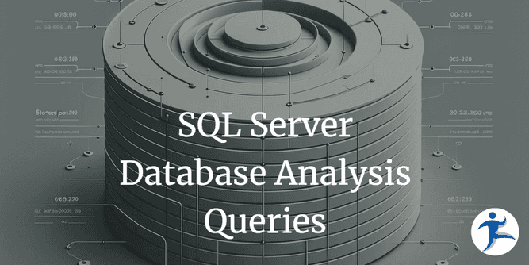

In this project, I developed a customer churn prediction model and provided insights for the client. I performed feature engineering, calculating differences in off-peak prices and transforming categorical data. Using Python, I visualized churn distribution and consumption data, analyzed skewness, and identified outliers. A Random Forest classifier was trained and evaluated, highlighting the model's strengths and areas for improvement. The project offered actionable insights into churn-related features and enhanced the client's understanding of customer behavior.

In this project, I predicted the Nifty 50 index performance for 2022/23 using RNN and LSTM models. The process included data collection, cleaning, and normalization. I engineered features like returns and technical indicators (RSI, EMAs) to enhance predictive accuracy. Models were developed in TensorFlow, incorporating dropout layers and batch normalization. Training involved adjusting hyperparameters (epochs, batch size) and evaluating with MSE and RMSE. I analyzed the impact of window sizes and parameter settings on financial indicators, ensuring robust predictions. The result was a highly accurate model providing valuable insights into Nifty 50 performance.

I created and managed a database to analyze order counts, customer behavior, runner performance, and delivery metrics. I identified total pizzas ordered, unique customers, and successful deliveries, and examined the most frequently ordered pizzas and customer customization preferences. Insights revealed peak order times, correlation between delivery speed and customer satisfaction, and the impact of customizations on repeat orders. This analysis provided key insights into Pizza Runner's operations, enabling data-driven decisions to optimize menu offerings, improve delivery efficiency, and enhance customer satisfaction.